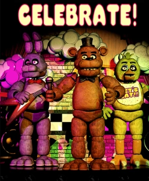

Fazbear Entertainment is dedicated to being the life of any parties! Be they graduations, weddings, or birthdays, Freddy and friends are always there for you!
Among our most early restaurants is the 1987 schematic, featuring the "Toy" line of animatronics! These lovable characters with their bright colors and plastic shells are perfect for kids!
There are currently 2 recreations of this restaurant, one each in Layton, Utah and Blanding, Utah. If you live near these towns, what are you waiting for?
GO! GO! GO!
Possibly the most iconic iteration of our brand, Freddy and friends are in their prime at these locations!
Featuring the "Showtime" line of animatronics, the designs are fluffy, cozy, and nostalgic with a timeless design. Perfect for folks of all ages! With six locations scattered around Utah, there's no escaping the show.
Folks interested in the history in the history of our chain can go to the original site, reopened with new and improved endoskeletons so the gang can feel even more lifelike!
Though the physical location is inacessable to guests due to a gas leak, the area was repurposed as a store house for animatronics in the Special Delivery program. What does that mean for you?
Why, it means the location comes to YOU! With the Freddy Fazbear's Special Delivery app and subscription, you can hire an animatronic performer and have it delivered directly to you!
Our most recent location, the fazbear crew is rocking harder than ever with the "Glamrock" line of animatronics, capable of wandering the entire establishment! (Trust us, that's quite a lot of wandering)
The Mega Pizzaplex is neon lightshow of 90's aesthetic and modern convenience in the form of a faz-tastic mall you'll never wish to leave! Shaking things up, you'll also find some changes to the cast.
Bonnie's passed the torch to his protige Montgommery Gator, as good with the bass as he is his handy golf club, rock and roll! And while Foxy is off-a plundering, he called up an old colleague from the west to make sure the pizzaplex is full of life and adventure. Say hello to Roxanne Wolf folks, the greatest keytar player and racer you'll ever meet!